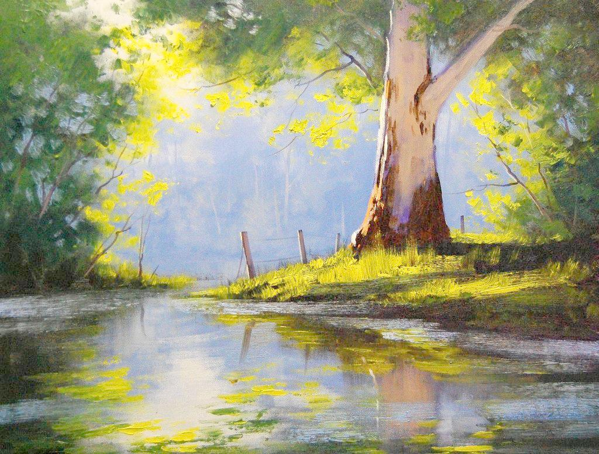
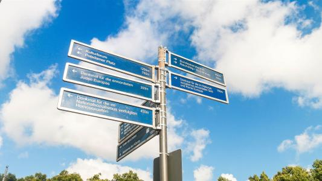

在人生的旅途中，有阳光，有鸟语，有花香，有绿草；在人生的旅途中，也有坎坷，有泥泞，有险滩，有激流。平坦的道路我们走，坎坷的道路我们也要走，怎样的艰难也得向前走。所以，在困境面前你胆怯，你懦弱，你萎缩，你一败涂地。困境也不会减少。只有在困境面前，你自信百倍，你勇敢顽强，你坚强不屈，你昂首挺胸。
困境是一个磨砺的极好机会，你如若一把沉沙很久，锈迹斑斑的宝剑，在困境——这个磨砺当中，是你取出沉沙后，会越磨越亮，越磨越锋，越磨越被人们所认识。
困境是的一个炉火熔炉纯青的，是一个锻造的机会。你如若一块粗糙的金属，在困境——这个旺火中锻造成一把锋利的长枪。所以，困境是强者的熔炉。
困境也磨练你的意志，你在困境面前，你会耐得住严寒，你会挺得住风霜，你会熬得住酷暑。你如若在绝壁的石缝上生长的一颗青松，它没有土壤，它干旱缺水。而它茂盛的生长着，体现了它顽强的生命力，体现了它坚忍不拔的个性，体现了它坚强的意志。它将在风中呼啸；它将在雨中婆娑；它将在寒中挺立；它将在雪中潇洒。在困境中张扬了它的本性。它的成长将是一道绝美的风景。让人看了惊叹不已，让人看了赞不绝口。
即使困境险恶的让你一筹莫展；即使困境险恶的让你四面楚歌；即使困境险恶的让你亲友远离。如若你已经迫到悬崖，那你也是在绝美的盛景中濒临绝境。那也没有什么好怕的，水流悬崖成瀑布，人至绝地乃重生。“山重水复疑无路，柳岸花明又一村。”困到穷尽的时候，往往就会出现新的转折点。就向亏到极处的月，马上就向满的方向发展。所以，人们常说：“月满则亏，水满则溢”。到了极限就向相反的方向发展。
在困境面前，你学会了思考。
困境给你思考的机会，让你充分的想象，深刻的沉思。是什么条件和原因形成目前的困境，有什么办法摆脱困境。怎样做能减少困境，怎样做能柳岸花明，怎样做能春风拂面，怎样做还会有峰回路转的机会。这些都是在今后的生活中有了更好的启迪。
在困境面前，你练就了冷静。
在困境面前，你冲动，你烦躁，你头脑发热，都是无济于事的。只有冷静的对待，冷静的想一想，冷静的分析事情的来龙去脉。冷静的去看周围的人与事，悄然观察，淡然处之，才能使自己心态平和，才能使你相对的深刻一些，才能尽量的想出一个好办法。
在困境面前，你练就了坚强。
常言说得好：“遭难莫寻亲”，在困境的时候，往往是自己扛。自己跌倒自己爬，自己有泪自己咽下。慢慢的练就了你的独立，练就你的坚强，你勇敢的面对困境，也许是走出困境的最好办法。
周国平在《直面苦难》中说：“一个人通过承受苦难而获得的精神价值是一笔特殊的财富，由于它来之不易，就决不会轻易丧失。而且我相信，当他带着这笔财富继续生活时，他的创造和体验都会有一种更加深刻的底蕴。”足以说明这种财富是经过艰苦卓绝而得到的，
困境——炉火纯青的熔炉，你在熔炉里锤炼，你在熔炉里摔打，你在旺火中锻造。使你燃去不足，留取精华，使你的人生更加完善些。
人的一生都会有许多坎坷，困境，磨难，风雨……
坎坷的人生是有味的人生；
困境的过往是难忘的过往；
磨难的时光是塑造的时光；
风雨的旅途是诗意的旅途。
感谢那些艰难的过往吧！它会锤炼意志。感谢那些人生的风雨吧！ 它会铸就坚强。